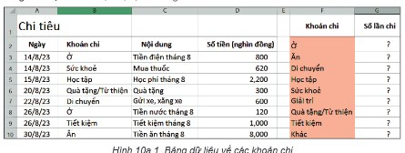
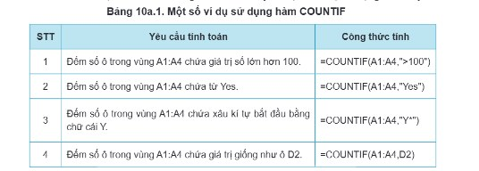
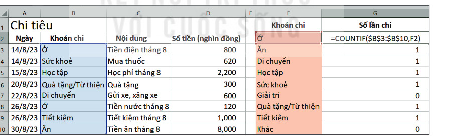
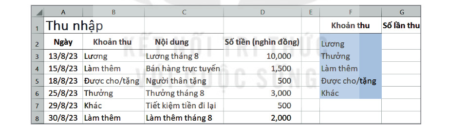
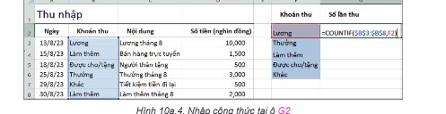
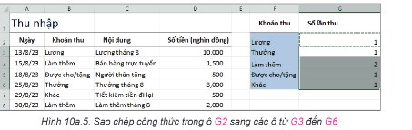
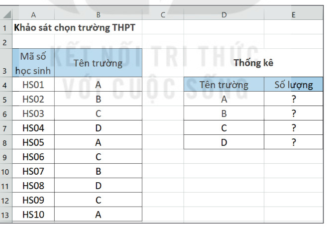

Dành cho giáo viên
Theo dõi lớp
| Học sinh / Nhóm | Đã nộp | Cập nhật |
|---|
Bước 1
1 Khởi động
Khám phá Hình ảnh khởi động
Trò chuyện Cùng An, Minh và Khoa
Đoạn trò chuyện gợi mở (không có trong SGK)
Minh: Tháng này nhà tớ chi cho ăn uống bao nhiêu lần nhỉ?
An: Ngồi đếm từng dòng trong bảng thì lâu lắm.
Khoa: Hàm COUNTIF đếm theo điều kiện, chỉ một công thức là ra!
An: Ngồi đếm từng dòng trong bảng thì lâu lắm.
Khoa: Hàm COUNTIF đếm theo điều kiện, chỉ một công thức là ra!
Khởi động Tổng hợp thu, chi của gia đình
Trong các bài học trước, em đã sử dụng công cụ xác thực dữ liệu để nhập dữ liệu chính xác cho bảng tính quản lí tài chính gia đình. Để việc chi tiêu của gia đình được kiểm soát thường xuyên hoặc định kì theo khoảng thời gian nào đó tuỳ vào mỗi gia đình, dữ liệu thu và chi cần được tổng hợp để trả lời những câu hỏi sau: Mỗi khoản chi đã được chi bao nhiêu lần? Mỗi khoản thu đã được thu bao nhiêu lần? Tổng số tiền đã chi tiêu của từng khoản chi là bao nhiêu? Tổng số tiền thu nhập của từng khoản thu là bao nhiêu? Thu nhập và chi tiêu của gia đình đã cân đối chưa? Những bài học tiếp theo của chủ đề này sẽ hướng dẫn em trả lời các câu hỏi trên, giúp cho việc chi tiêu của gia đình được kiểm soát hiệu quả.
Ghi bài Khởi động
Sau khi thầy cô chốt, em chép nội dung dưới đây vào vở.
Bước 2 · Hình thành kiến thức mới
2.1 Hàm COUNTIF
Hoạt động 1 Các khoản chi được tổng hợp như thế nào?
Giả sử dữ liệu chi tiêu đã được cập nhật trong vùng A3:D10 (Hình 10a.1). Theo em, công thức tại các ô G2, G3,…, G10 là gì để em có thể biết số lần chi tiêu của mỗi khoản?

Đọc hiểu Hàm đếm theo điều kiện COUNTIF
Đọc mục 1 (SGK trang 42). Để đếm số ô tính mà dữ liệu của ô thoả mãn một điều kiện nào đó, em sử dụng hàm đếm theo điều kiện COUNTIF. Bảng 10a.1 dưới đây là một số ví dụ sử dụng hàm này.

Thử bốn công thức của Bảng 10a.1 trên bảng tính mô phỏng: nhập vào các ô C1 đến C4 (ví dụ gõ =COUNTIF(A1:A4,">100") rồi nhấn Enter).
Công thức chung của COUNTIF là: =COUNTIF(range, criteria). Trong đó, ý nghĩa của các tham số như sau: range: phạm vi chứa các ô tính cần kiểm tra để đếm; criteria: điều kiện kiểm tra các ô tính trong phạm vi range. Trong Hình 10a.1, để biết mỗi khoản chi đã được chi bao nhiêu lần, em dùng hàm COUNTIF để đếm số ô tính trong vùng B3:B10 chứa mỗi khoản chi. Như vậy, công thức ở ô G2 là =COUNTIF($B$3:$B$10,"Ở") cho biết khoản Ở đã được chi bao nhiêu lần. Tuy nhiên, tên của khoản chi này đã được lưu ở ô F2. Vì vậy công thức tại ô G2 được sửa lại là =COUNTIF($B$3:$B$10,F2) như Hình 10a.2. Khi sao chép công thức này sang các ô còn lại từ G3 đến G10, công thức sẽ trả về kết quả là số lần chi của các khoản chi còn lại.

Câu hỏi SGK trang 43
Trong Hình 10a.2, công thức ở ô G2 là =COUNTIF($B$3:$B$10,F2). Em hãy trả lời các câu hỏi sau: a) Khi sao chép công thức trên sang các ô G3,…, G10 công thức sẽ thay đổi như thế nào? b) Nếu bỏ các dấu $ thì công thức ở ô G2 sẽ là =COUNTIF(B3:B10,F2). Sau khi sao chép công thức này sang các ô từ G3 đến G10, kết quả trả về tại các ô đó có đúng không? Tại sao? (Thử ngay trên bảng tính của phần Thực hành: chọn ô, xem công thức ở vùng nhập dữ liệu.)
Ghi bài 1. Hàm COUNTIF
Sau khi thầy cô chốt, em chép nội dung dưới đây vào vở.
Bước 2 · Thực hành
2.2 Thực hành: Sử dụng hàm COUNTIF
Nhiệm vụ Tổng hợp chi tiêu theo mỗi khoản
Sử dụng hàm COUNTIF để tổng hợp chi tiêu theo mỗi khoản. Hướng dẫn. a) Tính số lần chi của mỗi khoản chi trong trang tính Chi tiêu: mở tệp bảng tính TaiChinhGiaDinh.xlsx, chọn trang tính Chi tiêu; nhập dữ liệu cho trang tính để được kết quả tương tự như Hình 10a.1; tại ô G2, nhập công thức =COUNTIF($B$3:$B$10,F2) như minh hoạ trong Hình 10a.2; sao chép công thức trong ô G2 sang các ô từ G3 đến G10; lưu bảng tính.
b) Tính số lần thu của mỗi khoản thu trong trang tính Thu nhập: chọn trang tính Thu nhập; nhập dữ liệu cho trang tính để được nội dung tương tự như Hình 10a.3; tại ô G2, nhập công thức =COUNTIF($B$3:$B$8,F2) để tính số lần thu của khoản Lương (Hình 10a.4); sao chép công thức trong ô G2 sang các ô từ G3 đến G6 để tính số lần thu của các khoản thu còn lại (Hình 10a.5); lưu tệp.
b) Tính số lần thu của mỗi khoản thu trong trang tính Thu nhập: chọn trang tính Thu nhập; nhập dữ liệu cho trang tính để được nội dung tương tự như Hình 10a.3; tại ô G2, nhập công thức =COUNTIF($B$3:$B$8,F2) để tính số lần thu của khoản Lương (Hình 10a.4); sao chép công thức trong ô G2 sang các ô từ G3 đến G6 để tính số lần thu của các khoản thu còn lại (Hình 10a.5); lưu tệp.
Trên bảng tính mô phỏng (dữ liệu đã nhập sẵn): chọn G2, gõ công thức rồi Enter; chọn lại G2, bấm 📋 Sao chép, kéo chọn vùng G3:G10 rồi bấm 📌 Dán.



Ghi bài 2. Thực hành
Sau khi thầy cô chốt, em chép nội dung dưới đây vào vở.
Bước 3
3 Luyện tập
Luyện tập Bổ sung dữ liệu và khảo sát chọn trường
1. Em hãy bổ sung thêm một số dòng dữ liệu thu, chi vào cả hai trang tính Thu nhập và Chi tiêu. Hãy điều chỉnh công thức COUNTIF ở cột G để kết quả tổng hợp số lần thu, chi của mỗi khoản được chính xác.
2. Em hãy thực hiện cuộc khảo sát về việc chọn trường THPT của các bạn trong lớp. Nhập thông tin mà em thu thập được vào bảng tính và sử dụng hàm COUNTIF để tổng hợp kết quả khảo sát như minh hoạ ở Hình 10a.6.

Ghi bài Luyện tập
Sau khi thầy cô chốt, em chép nội dung dưới đây vào vở.
Bước 4
4 Vận dụng
Vận dụng Kinh phí Triển lãm tin học
Em hãy mở bảng tính KinhPhiTrienLam.xlsx đã tạo ở phần Vận dụng, Bài 9a và sử dụng hàm COUNTIF để tính số lần thu của mỗi khoản thu, số lần chi của mỗi khoản chi của dự án Triển lãm tin học. Lưu tệp sau khi hoàn thành công việc.
Ghi bài Vận dụng
Sau khi thầy cô chốt, em chép nội dung dưới đây vào vở.